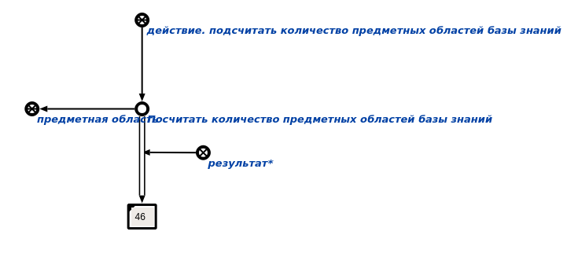

Задача: подсчет количества предметных областей базы знаний.
Описание: агент находит экзмпляры класса предметная область и вызывает процедуру подсчета мощности множества.
Инициализация: появление в памяти вопросной конструкции, соответствующей действию. подсчитать количество предметных областей базы знаний.
Аргументы: отстутствуют.
Результаты:
- Число - количество предметных областей в базе знаний.
Пример:
